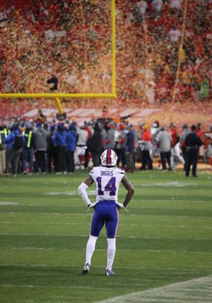

MiniBART Web App
|
|
Our project is a real-time map web-app of the Bay Area, utilizing APIs to source geographic info and Three.js for rendering. Our main feature is real-time ray marching, used to render fog and BART train locations. We plan to implement this using Three.js as our engine, fed with info from BART Developer Resources.
Project Contributors:
- Sage Aguina-Kang
- Edward Gilmore
- Sebastian Mejia
- Jovin "The Destroyer" Valdez
Problem Statement
Our project idea was inspired by MiniTokyo3D, a web simulation of the Tokyo train systems. MiniTokyo accomplishes this by using a Public Transportation API to fetch real-time train locations, creating a 3D map of Tokyo and its train via various web frameworks. We want to create something similar: a real-time simulation focused on the BART that uses 3D graphics to create an engaging and informative user experience.
Traveling in the Bay Area can be greatly affected by weather conditions, which can affect how one dresses for travel and whether public transportation runs on time. Our goal is to create a simulation that provides quick, clear, and precise information about fog and transit conditions. We want to present this information in a 3D simulation with fast and visually interesting graphics. It can be a challenge accomplishing this within a web context, as computation resources are often more limited, and fast-rendering languages (like C++) aren’t directly interfaceable in a web context. Because of this, a key area of expected difficulty will be implementing and optimizing 3D approaches that balance visual fidelity with available processing resources. We plan to solve this by using lower-cost solutions to problems when available, using methods such as ray-marching instead of path tracing.
Goals and Deliverables
Baseline Goals
Since we want to design a web app, we will have to account for technical limitations of the more complex algorithms taught in class. For example, implementing a complete real-time path tracer over the scene would be too computationally expensive. Instead, we are planning on exploring more lightweight options. Ray marching will be explored as an alternative, which can still produce visually compelling results while remaining performant enough for real-time rendering on the web. This approach should be well suited for effects like fog, which can be rendered more effectively without the overhead of complex geometry or lighting models. Raymarching will also be used for rendering the 3D models of the BART trains.
In our demo we plan to walkthrough our web application, showcasing a map of the bay area with moving 3D objects representing BART trains with lighting and shading. We will show examples of areas with our custom rendered fog, possibly with settings we can toggle to play around with different effects. We want to answer the question of what limits web-based graphical processing has when implementing rendering methods like ray marching.
Our baseline plan for the project is specifically to create custom rendered fog and lighting in a bay area BART map simulator using Three.js. Performance and quality will be measured via accuracy of simulations (mapping trains in the simulation to real-world locations) and render times allowing sufficient FPS in-browser (with a rough goal as (5-30fps). We expect ray marching to run well in browsers, but if we experience struggles rendering the bay, we may explore downgrading some rendering (like fog) to some other method, like real time rasterization.
Aspirational Goals
If things go well enough, our aspirational plan includes rendering other forms of real time transportation information (such as buses) and implementing other weather effects (like rain). Rendering buildings in 3D would also be a nice feature, depending on how much additional processing requirements it adds to the scene.
The following image is a photoshopped edit of a MiniTokyo screenshot, showing what we expect a rendered scene of our project to look like in a very general sense. Note the foggy scene and 3D train cars.
Project Schedule
March 30 - April 4: Finalize project idea and draft proposal
April 4 - April 7: Set up the repository and experiment with the frameworks/tools we plan to use like Three.js, BART API, OpenWeather, etc, and watch the crash course Youtube video. Divide tasks such as fog rendering and transit API
April 8 - April 14: Create a base Three.js map, it can be dummy buildings instead of using the map API. Complete a simple, baseline implementation of rasterized fog. Formally begin drafting milestone deliverables.
April 15 - April 20 (GRADED MILESTONE DUE): Add animations to train movement, start integrating the 511 API. The website should be rough, but a working prototype. Finish drafting milestone deliverables.
April 21 - April 27: Start polishing the prototype. Implement refinements such as ray marching to make BART trains’ lighting more realistic. Implement conditional fog rendering with weather API.
April 28 - May 4 (FINAL DELIVERABLES DUE): Final touches. Add different types of buildings, and more advanced train models to make it more visually appealing. Implement any necessary web optimizations.
Task 1: Drawing Single-Color Triangles
Walk through how you rasterize triangles in your own words.
I was very much inspired by the pseudocode and approaches described in lecture. First, I had to find the bounds for xmax and ymax. I simply did this by taking max(x1, x2, x3) and max(y1, y2, y3) since these three points are already provided to us. I then calculated three edges: 01 (from vertex 0 to vertex 1), 12, and 20. We’re about to see why this is useful.
I looked at the lecture notes (again) and applied the three line tests, creating 3 functions that determine if a point is inside these lines.
Now, we can get into the meat of the for loop.
- For each point, sample at the pixel center (x + 0.5, y + 0.5)
- Run the three line tests
- Fill the pixel with the triangle’s color ONLY IF all tests are ≥ 0, meaning that the point is inside the triangle.
I was getting frustrated by Basic Test 6 because the counter-clockwise hexagons weren’t getting filled in.
- I resolved this issue by calculating the area as \( (x1 - x0) * (y2 - y0) - (x2 - x0) * (y1 - y0) \), setting the orientation to 1 if the area is positive, and -1 if it’s negative.
- I then updated the line tests to multiply the final result by the orientation. This allowed my code to work for clockwise and counterclockwise cases.
Explain how your algorithm is no worse than one that checks each sample within the bounding box of the triangle. The bounding box of the triangle is defined as the smallest rectangle that can be drawn whilst ensuring that the entire triangle is within it.
Well…my algorithm is no worse than checking every sample within the bounding box of the triangle, because that’s what I just did.
Calculating the max/min values of x and y and iterating over every (x,y) point in between creates the smallest possible rectangle that surrounds the provided points.
Task 2: Antialiasing by Supersampling
Walk through your supersampling algorithm and data structures. Why is supersampling useful? What modifications did you make to the rasterization pipeline in the process? Explain how you used supersampling to antialias your triangles.
I made use of the built-in sample buffer. It’s a 1D vector that contains all samples.
- Its size is width * height * sample_rate, which is the number of subsamples per pixel.
I also used the built-in RGB framebuffer, which stores the final image that will be displayed.
- Its size is 3 * width * height because there are three channels (Red/Green/Blue).
I updated the set_sample_rate() and set_framebuffer_target() functions to accommodate for the sample rate that we’re now using.
fill_pixel() was also updated, now it has a for loop that writes to all subsamples of a pixel.
I updated the algorithm by modifying rasterize_triangle() to implement supersampling.
- In Task 1, it was a double for loop that selected every sample within the bounding box.
- Now, for each pixel, there are additional nested for loops “i” and “j” that iterate over the (square root of the) sample rate.
- We write to the sample buffer for every subsample that passes all three line tests.
- Now, as we write the result to the framebuffer, we take the average of every pixel’s subsample. This gives us a more nuanced color shade than the binary “triangle” or “not triangle”.
Now, as we write the result to the framebuffer, we take the average of every pixel’s subsample. This gives us a more nuanced color shade than the binary “triangle” or “not triangle”.
Show png screenshots of basic/test4.svg with the default viewing parameters and sample rates 1, 4, and 16 to compare them side-by-side. Position the pixel inspector over an area that showcases the effect dramatically; for example, a very skinny triangle corner. Explain why these results are observed.

|

|

|
When the sample rate is 1, we can see particularly horrid jaggies in regions like the red triangle’s edges. Some parts of the triangle seem completely disjointed.
However, the sample rates of 4 and 16 give us smoother triangles because they average the colors around the triangles’ edges.
Task 3: Transforms
Create an updated version of svg/transforms/robot.svg with cubeman doing something more interesting, like waving or running. Feel free to change his colors or proportions to suit your creativity. Save your svg file as my_robot.svg in your docs/ directory and show a png screenshot of your rendered drawing in your write-up. Explain what you were trying to do with cubeman in words.
|  |
I created a diva robot with hands on its hips. I was inspired by Stefon Diggs’ iconic, dramatic photo after his team lost to the Chiefs in the playoffs.
I used the rotate transformation to get the arms and hands in place: Left arm (-30), left hand (60), right arm (30), right hand (-60).
Even with these transformations, the hands’ positions didn’t look quite right. So I translated the left hand to (-25 45) and the right hand to (25 45).
Task 4: Barycentric coordinates
Explain barycentric coordinates in your own words and use an image to aid you in your explanation. One idea is to use a svg file that plots a single triangle with one red, one green, and one blue vertex, which should produce a smoothly blended color triangle.
I like to think of barycentric coordinates as a game of tug-of-war. Imagine you have three friends who form a triangle, and you’re being attached to three ropes being pulled by your friends. Your position will be defined by how hard your friends are pulling their respective ropes. In the attached image, each vertex (A, B, C) has its own weight (α, β, γ) that determines the point’s location in the triangle.
Show a png screenshot of svg/basic/test7.svg with default viewing parameters and sample rate 1. If you make any additional images with color gradients, include them.

Task 5: "Pixel sampling" for texture mapping
Explain pixel sampling in your own words and describe how you implemented it to perform texture mapping. Briefly discuss the two different pixel sampling methods, nearest and bilinear.
Pixel sampling is essentially the process of picking values from a 2D texture, and using them to determine a pixel’s respective color on a 3D surface.
The problem with mapping a texture is that the UV coordinates don’t automatically match up with the texture’s pixel grid.
Nearest Neighbor Sampling
- Simple approach. Just round to the closest texel of the given UV coordinate.
- It makes an image that looks blocky when you zoom in.
- This was done by converting UV to texture space, by multiplying by width and height. Then, find the nearest integer coordinates.
Bilinear Sampling
- A more sophisticated approach. Sample the four nearest texels, and blend between them.
- The resulting image is smoother than nearest sampling.
- We calculate weights (s, t) based on how close the sample point is to each texel.
- LERP in the x direction, then interpolate the results in the y direction.
Check out the svg files in the svg/texmap/ directory. Use the pixel inspector to find a good example of where bilinear sampling clearly defeats nearest sampling. Show and compare four png screenshots using nearest sampling at 1 sample per pixel, nearest sampling at 16 samples per pixel, bilinear sampling at 1 sample per pixel, and bilinear sampling at 16 samples per pixel.
|
|
|
|
|
|
Comment on the relative differences. Discuss when there will be a large difference between the two methods and why.
- I notice that nearest sampling is very rigid/pixelated, particularly in the Mediterranean sea as shown in the pixel inspector.
- Meanwhile, bilinear sampling blurs the image to create a smoother effect.
- There is a larger difference between the two methods when the sampling rate is lower. At 16 samples per pixel, there is enough antialiasing to smooth the image regardless of bilinear or nearest sampling being applied.
Task 6: "Level Sampling" with mipmaps for texture mapping
Explain level sampling in your own words and describe how you implemented it for texture mapping.
Level sampling is the process of picking the appropriate resolution level, based on the viewing distance.
We generally prefer higher levels for objects close to the camera (higher resolution), and lower levels (lower resolution) for far away objects.
I calculated the mipmap level by taking the derivatives of u and v, I scaled them to the texture dimension, then I computed the maximum rate of change, and finally I took the Log_2 of this value. Just like in lecture.
You can now adjust your sampling technique by selecting pixel sampling, level sampling, or the number of samples per pixel. Describe the tradeoffs between speed, memory usage, and antialiasing power between the three various techniques.
P_NEAREST is faster because it only samples one (nearest) texel, whereas P_BILINEAR reads and interpolates 4 texels. P_BILINEAR is better for antialiasing, since it's not as blocky/jagged as P_NEAREST.
L_ZERO is the fastest (only uses the base texture), L_NEAREST is medium speed (looks up one level), and L_LINEAR is the slowest (samples and interpolates 2 levels). L_ZERO uses the least memory because, again, it only utilizes the base texture. However, L_NEAREST and L_LINEAR store the entire mipmap pattern, which is 1/3 more memory than the base texture. L_LINEAR has the best antialiasing, since it transitions between mipmap levels smoothly.
Supersampling is linearly faster than sampling rate, e.g. using a sample size of 4 will make the render time 4x slower. Memory also increases linearly with supersampling, since you need to store multiple samples for every pixel.
Using a png file you find yourself, show us four versions of the image, using the combinations of L_ZERO and P_NEAREST, L_ZERO and P_LINEAR, L_NEAREST and P_NEAREST, as well as L_NEAREST and P_LINEAR.

|

|

|

|